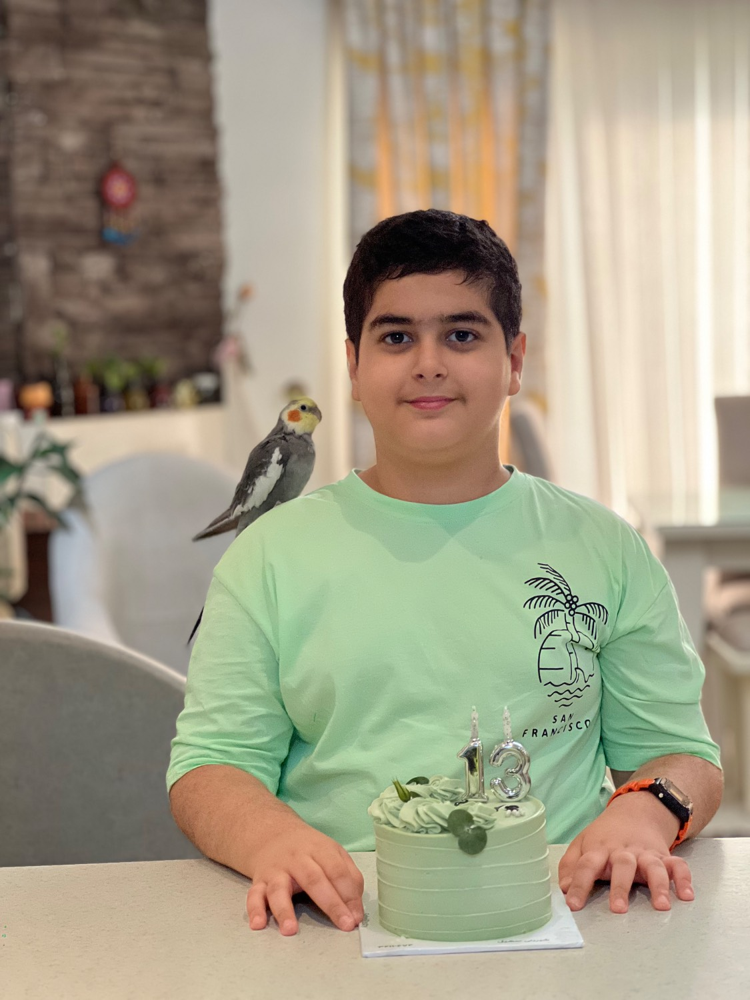
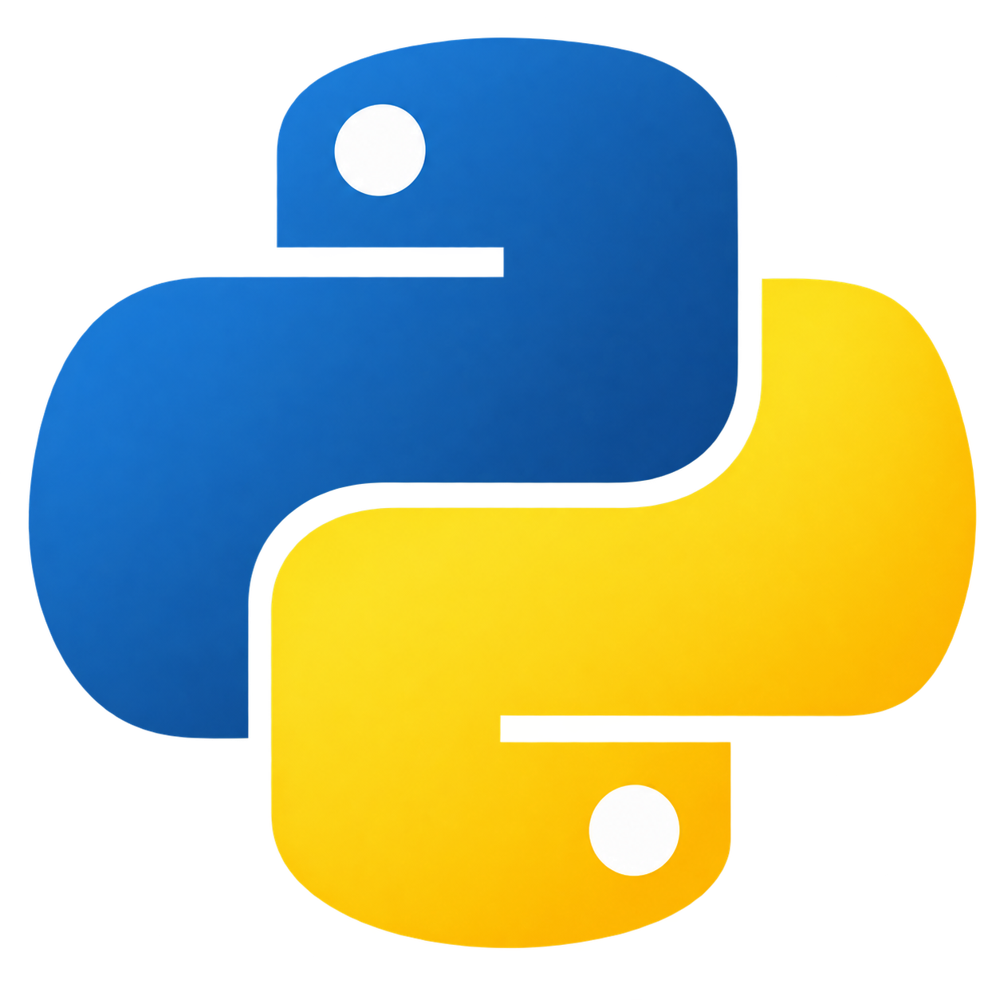
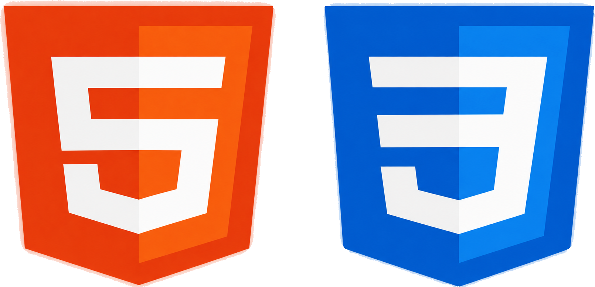
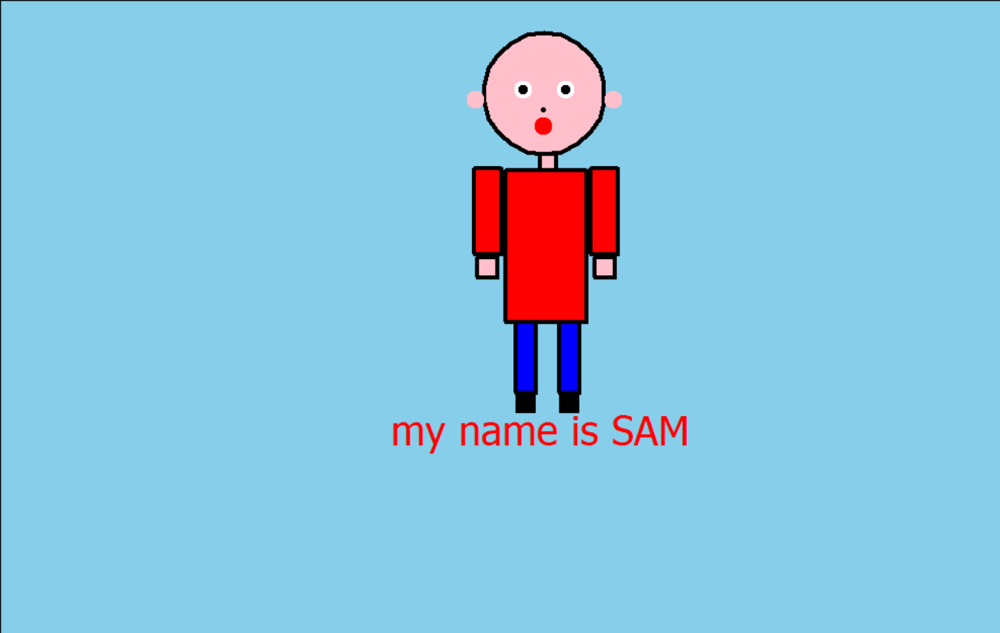
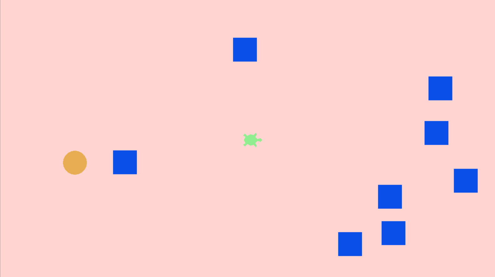
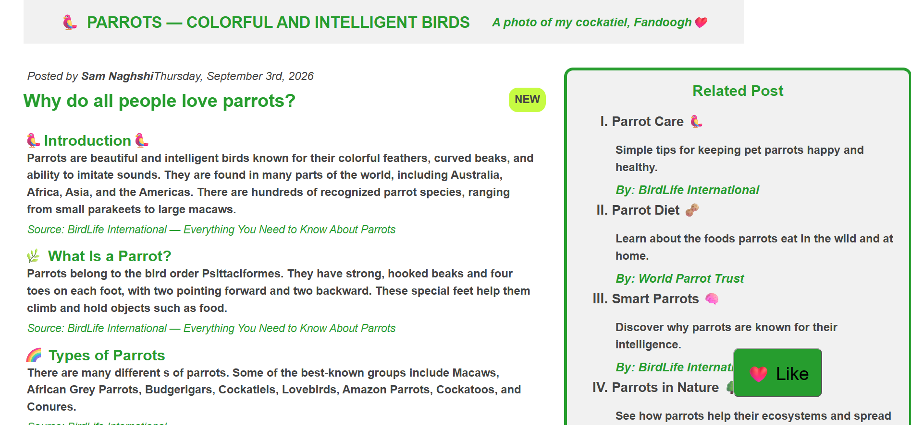
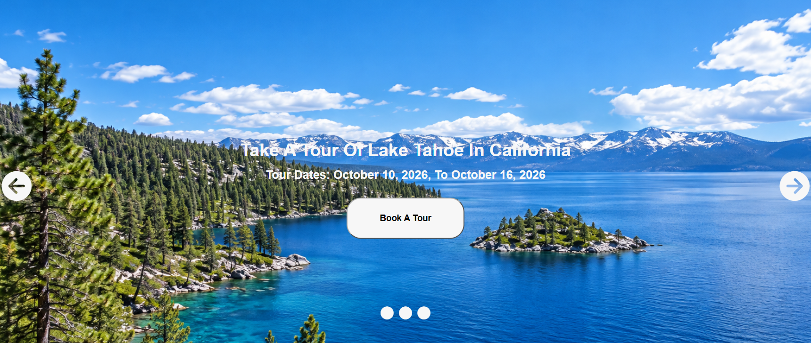

About Me Hello! My name is Sam Naghshi. I am 13 years old and I am from Rasht, Iran. I am an eighth-grade student who is passionate about computers and technology. I have good computer skills and enjoy designing and developing websites using HTML and CSS. I am also interested in Python programming and robotics. I love learning new things, solving problems, and exploring new technologies. My goal is to improve my programming skills, create exciting projects, and become a skilled programmer in the future. Thank you for visiting my portfolio!

I have a good understanding of Python programming, including its basic concepts, logic, and core principles. I have also attended Python programming class and developed several projects, including a Rock Paper Scissors game, a game using the Turtle graphics library, and a stick-figure drawing using Turtle.

I have a good understanding of HTML and CSS and know how to design websites. I am familiar with their main tags, rules, and principles. I have also attended web development class and created many interesting and creative projects using these technologies.

This stick figure project was created in Python using the Turtle library. I spent two days working on it, and it is one of my best Python projects.

This Game project was created in Python using the Turtle and Random librarys. I spent two days working on it, and it is one of my best Python projects too.

This is my Parrot blog Project, which I created using HTML and CSS. It is my Biggest Project .

This is my Post Card Project, which I created using HTML,CSS and Fontawsome. It is my Biutifules Project.